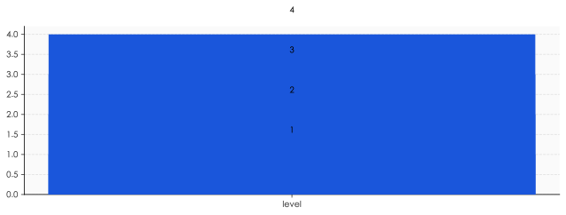

72 小时换帅，干净得有点诡异
先复盘一下时间线。
2026 年 6 月 4 日，阿里 ATH 事业群悟空 BU 的员工滕雅辛（化名 Corgi），在阿里内网发表《置身钉内》，全文 7.5 万字，分八章——发心、定位、设计、用户、敏捷、秩序、军争、长期。
文章核心是讲钉钉旗舰 AI 产品 ONE 的故事：从立项、上线到收缩。这个产品想做"事找人"，DAU 峰值约 300 万。然后被砍了。
6 月 10 日，阿里合伙人委员会公开回应，原话："文中提及的管理方式不是阿里文化该有的样子。"
6 月 11 日，钉钉 CEO 陈航（无招）卸任。
6 月 12 日，SpaceX 在 NASDAQ 上市，1.75 万亿美元市值——你看，资本市场的星辰大海和阿里巴巴的中层管理，同一周发生。
这个换帅速度，干净得有点诡异。
正常大厂处理这种公关事件，要走调查、要走流程、要给老板留体面，72 小时基本只够发个"我们高度重视"的公告。
阿里这次不一样。
它选择用最快的速度切割——一切割就到顶端。
但兄弟们仔细想想——
切割一个具体的人，比承认一个系统性问题，容易得多。
无招好切。中层"权力美学"那一整套打法不好切。
所以这次切的，是看得见的脸。看不见的皮肤，还在。
7.5 万字到底骂了什么
很多人没看完 7.5 万字。我帮你拆。
《置身钉内》骂的不是无招个人，骂的是一整套被工程化的中层管理打法。
文章里说了几个关键的"症状"——
症状一：双重汇报，没有明确层级
一个产品经理，技术上汇报给 A，业务上汇报给 B。A 和 B 互相不知道对方在派活。两边都觉得这人是自己的下属，两边都要他在 deadline 之前出活。
结果是——这个产品经理同时被两条线榨干，没有一个人能为他的工作量负责。
症状二：用户问题向上传递失灵
一线员工看到用户的真实抱怨，但没法把这些抱怨准确传到决策层。每往上传一层，"抱怨"就被翻译一次："用户在抗议" → "用户反馈较多" → "我们已经关注到" → "正在持续优化"。
到了 VP 桌子上，已经是"产品体验有提升空间"。
症状三：极致工作强度 + 反复返工
需求加了又加，设计改了又改，临近上线被推翻重来。一线员工不是不想做事，是做的事一直在被推翻。
文章里有个很狠的描述："实际干活的人，越来越少。"
不是裁员裁少了。是大家都被反复返工耗死了精力，只剩下能"汇报"的人还能撑住。
症状四：KPI 驱动 + "权力美学"
这是全文最锋利的指控。
"权力美学"——这个词不是骂人，是观察。
它指的是：决策不靠用户数据，靠"谁敢顶 leader"。会议不为了对齐方向，为了演给上面看你有多重视。功能不是为了用户的需求，是为了下个季度财报里有个新的 highlights。
兄弟们这套语法熟悉吗？
熟悉。这就是中文互联网中层的默认操作系统。
无招只是把它演得过于赤裸。
ONE 产品的悲剧——AI 时代的「功能堆砌」诅咒
聊聊那个被砍掉的 ONE。
ONE 的核心定位是"事找人"——通过 AI 自动总结工作消息，帮你从无数群聊里捞出真正需要你处理的事。
听起来是不是很好？
听起来很好。
DAU 巅峰 300 万，证明用户最初是买单的。
然后被砍了。
为什么？
我个人感觉——
ONE 死在了AI 时代的「功能堆砌」诅咒上。
让我解释。
钉钉这种巨型 IM，本质上是一个信息分发管道。它的核心价值是让消息高效地传递。
AI 介入这套管道的正确方式，应该是减法——帮你过滤、帮你筛掉、帮你只看到该看的。
但你看 ONE 实际做了什么？
它在原本的钉钉首页之上，又叠加了一层 AI 摘要。然后这层 AI 摘要又开始有自己的 tab、自己的 quota、自己的 KPI 要求……
这玩意儿不是"事找人"，这玩意儿是"AI 功能找人"。
你以为是 AI 在帮你减负，其实是 AI 在帮产品经理立项。
兄弟们这套打法熟悉吗？
熟悉。这是 2024-2026 年大厂 AI 产品的标准死法——
不是因为 AI 不行，是因为组织内部对"AI 功能"有 KPI 配额。
每个 PM 都要在自己的 module 里加一个"AI 增强"。每个 leader 都要在述职 PPT 里写"本季度新增 N 个 AI feature"。每个 BU 都要在年度规划里报"AI 战略级产品 X 个"。
这套配额一旦下达——
AI 就从"工具"变成了"任务"。
它的目标不是让用户更轻松，是让 PPT 更好看。
ONE 的悲剧不在于产品差，在于它从一开始就承担了不该承担的组织叙事。
把"AI 战略级旗舰"扛在一个还在 MVP 阶段的产品上——
这不是产品错，是组织错。
但兄弟们想清楚——做这个决策的不是无招一个人。
是整个互联网中层的"AI 战略"焦虑。
「权力美学」是怎么工程化的
这一节最狠。
「权力美学」这个词我前面用了几次。它到底是什么？
它不是性格。不是脾气。不是"无招就是这种人"那种简单解释。
它是一套可以工程化的管理语法。
具体怎么工程化？我拆四层给你看。
第一层：决策仪式化
大厂的中层决策，95% 是开会决策。
但开会的目的不是讨论，是表态——leader 抛个想法，你必须在 30 秒内接住，并且接住的方式得"高级"：先肯定老板的视角是对的，再补一句"我从用户角度还有个补充"，最后回到老板想要的方向。
这套话术叫"对齐"。
对什么齐？不是对齐方向，是对齐表态姿势。
第二层：质询美学
你看那种典型的中层管理者怎么 review 下属——
不是问"这个数据是怎么得到的"。是问"你为什么不知道？"。
不是问"我们能怎么改进"。是问"是谁决定这么干的？"。
不是问"我能怎么帮你"。是问"你这周到底在干什么？"。
这种问法的本质是——通过让对方在压力中失误，证明自己作为质询者的高位。
它不解决问题。它表演权力。
第三层：返工驱动
返工不是 bug，是 feature。
因为返工是 leader 最便宜的"产出"。一句"再想想"，下属就要熬两个通宵。两个通宵的工作量，对外可以说成"我推动了团队迭代"。
返工得越多，leader 显得越"有要求"。下属累得越狠，leader 显得越"严格"。
这套打法的副作用是——优秀的人最快被耗死。因为他们的迭代速度最快，被反复返工的次数也最多。
最后留下来的，往往是最擅长在返工中保持情绪稳定的人——也就是最不在乎结果的人。
第四层：KPI 美化
季度末的述职 PPT，本质上是一场叙事重构。
把"我们改了三版方案，最后上线一版"包装成"敏捷迭代，快速验证"。 把"用户增长 5%"包装成"在结构性挑战中实现关键突破"。 把"团队被裁掉 30%"包装成"组织效率优化"。 把"产品被砍"包装成"战略聚焦"。
这套语言一开始是给上级看的，慢慢就内化了——人会真的相信自己的 PPT。
这才是「权力美学」最可怕的地方。
它不是装出来的。是一套自我认同的真实操作系统。
无招演得太过，所以被骂。但你公司里那些没被骂的，一样在演。
只是分寸感更好。

阿里的回应为什么不能根治问题
阿里的反应很快。也很体面。
合伙人委员会公开说"不是阿里文化该有的样子"，CEO 卸任，CTO 接班——这套流程，已经是大厂能做出的最高分动作。
但兄弟们仔细想想——
这套动作能解决什么？
能解决的是公关问题。不能解决的是结构问题。
为什么？
因为「权力美学」的真正载体不是 CEO，是中层。
CEO 可以换。中层一个个换不了。
阿里几万个中层 leader，每一个都是在过去 10 年里因为"权力美学"做得好而被提拔上来的。
这套筛选机制不变，留下来的人就是同一种人。换一批，还是同一种风格。
你看金融行业、看 P&G、看 GE——历史上每一次"换帅救公司"，能改变的都是公司的方向，改变不了公司中层的人格类型。
因为中层的人格类型是被招聘标准、考核标准、晋升标准筛选出来的。这三个标准不变，人格类型就不变。
所以《置身钉内》这次的震荡，会经历一个典型的"危机-修复-遗忘"周期：
- 6 月：内网爆文 → 全网热议
- 7-8 月：钉钉调整 → 内部新政策
- 9-12 月：声音逐渐沉淀
- 2027 年初：下一份《置身 XX 内》出现，可能来自其他大厂
我个人感觉，《置身钉内》的真正意义不是改变阿里——
而是给所有还在大厂中层挣扎的人，一份可以被命名的语言。
以前你说"我们 leader 很烦"，没人理你。
现在你说"这是权力美学"，全网都懂。
命名本身就是一种解放。
但命名不等于解决。
阿里之外，还有 90% 的中层在用同一套打法。它们没出爆款离职信，不代表它们没问题——只是它们的 Corgi 还没决定写。
置身钉内的你，怎么办
最后一节，聊聊你。
你大概率不在钉钉。但你大概率在某个有「权力美学」的中层架构里。
你的 leader 不叫无招。但他可能叫"X 哥""Y 总""Z 老师"，那个让你周五晚上 10 点改 PPT 的人。
你怎么办？
我有几个个人感觉——不是建议，是观察。
观察一：「权力美学」最害怕的不是反抗，是公开
无招的真问题不是管得严，是被写出来了。
「权力美学」依赖于信息不对称——leader 知道这套游戏怎么玩，下属只觉得是自己"不够努力"。一旦这套语法被命名、被写下来、被全网传播——
它就失效一半。
所以《置身钉内》这种文本的真正威力，不是改变阿里，是让所有在大厂的人知道——"这不是你的错，这是一个系统"。
你不用反抗，你只需要看清楚。
观察二：内卷不是你能赢的游戏
如果你想在「权力美学」的游戏里赢——你赢不了。
因为这套游戏的目的不是产出，是表演。而表演的天花板，永远是你 leader 设的。
你越努力，你 leader 显得越严格；你越认真，你 leader 显得越"有要求"；你越主动加班，你 leader 显得越"有抓手"。
你的产出，最终是他述职 PPT 里的一行字。
那行字里没有你的名字。
观察三：「转身离开」也是一种 KPI
我个人感觉，2024-2026 这一波大厂出走潮，本质不是钱的事。
是越来越多的人意识到「权力美学」是一种零和游戏，于是选择不玩了。
有人转身去创业，有人去小公司，有人 gap year，有人转行做 AI——共同点不是赚得更多，是不再为一个不存在的"被认可"而消耗自己。
兄弟们，如果你现在还在某个"无招式"的团队里——
我不劝你立刻走。生计是第一位的。
但请保持一件事——不要内化这套语法。
不要开始用"对齐"来掩盖你的真实判断。 不要开始用"敏捷"来描述无意义的返工。 不要开始用"赋能"来包装你的疲惫。 不要开始用"复盘"来给自己做思想政治工作。
只要你还能用大白话描述你的工作——
你就还没被"权力美学"驯化。
那是你最后的体面。
也是你以后回头看这段经历，能给自己保留的那块没被烂掉的核心。
无招走了。
但你的「无招」还在。
——而你不在「权力美学」里，是你自己决定的。